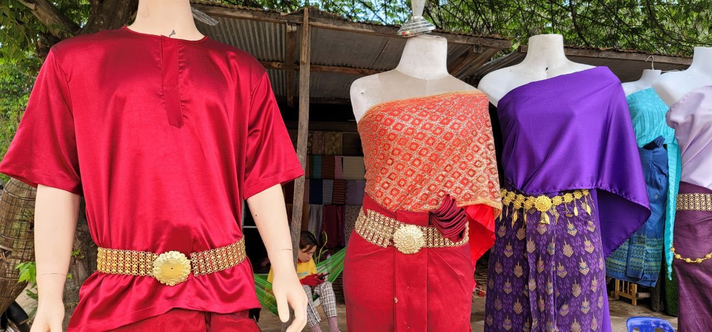
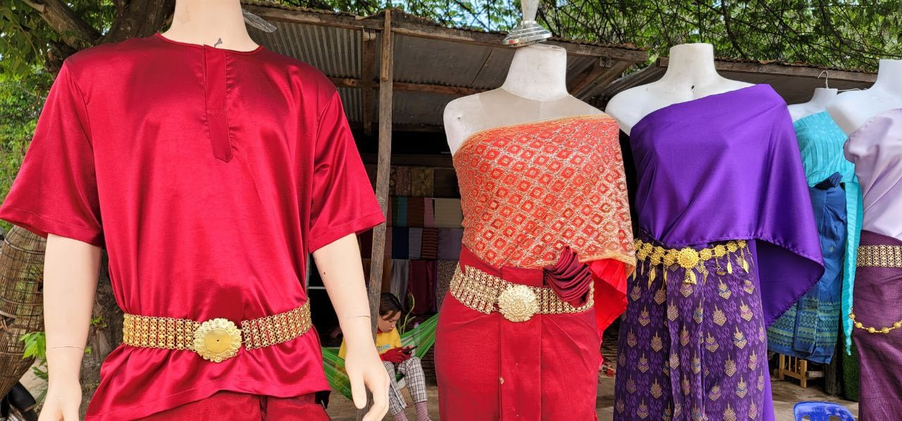
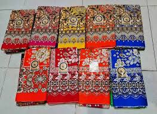

Traditional Khmer Clothing is both beautiful and functional. the style have been shaped by Cambodia's hot tropical climate, as well as its cultural Traditions. Both men and women wear loose. lightweight clothing made of natural fibers and natural material like catton or silk. Bright colors and intracate details showcase the skill of khmer weaver and tailors.The most well-known Tradition garment is the sampot, a wrap-around lower garment worn by both men and women.The sampot phamoong,worn by women, is a retangular febric wrapped wrap-around the waist and pinned at the top to creat a skirt. Men wear the wear the sampot-kben,which is trucked in and held up by a belt called a krama . The ssampot comes in colorful checkered patterns or colorful floral silk brocades.
The sampot chang kben is a full, ankle-lenght silk .It's made of silk and decorated with floral or geometic patterns.Women wear this for special occasion like weddings or festivales. The sampot chang phnom is a knee-length cotton skilk.It's more casual and wom for everyday activities .This sampot is wrapped around the waist and secured in the place with abelt celled a kroma.

 

The Kroma is a checkered scarf that serves many purpoes in Khmer clothing. Women use it as hold the sampot in place. Men wear the Kroma around theirwaist or neck. The Kroma also has many practical uses;,like as a towel,basket,or hammock. They come in red,blue or green checkered patterns.


A sarong is large piece of patterned fabric used by Khmer people of all genders. It has many uses, such as : A wrap for women to wear over a sleveless top A towel for bathing A blanket A hammock or mat to sit on.


The Angkor shirt is a loose-fitting silk or cotton button-down shirt.It's worn by both men and women, and ofen paired with trousers or a sampot. Angkor shirts feature delicate embroidery, especially around the collar and cuffs. They are popular souvenirs for tourists visiting Cambodia.